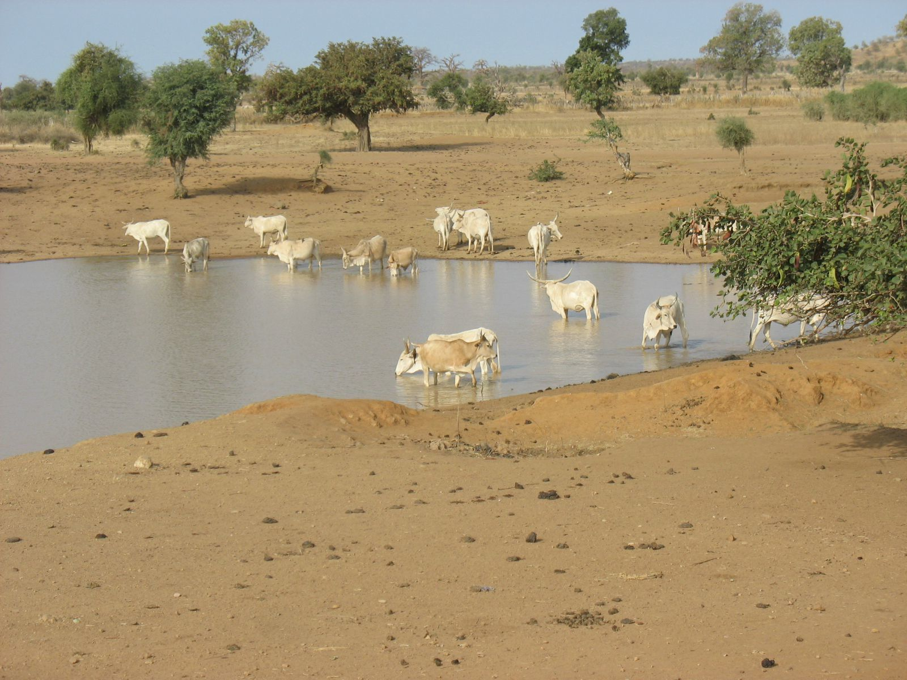

Le Fuuta Tooro de Ceerno Suleymaan Baal à la Fin de l'Almamiyat 1770 - 1880
INTRODUCTION
La Moyenne Vallée du Fleuve Sénégal, en raison de ses possibilités agricoles et pastorales
immenses, a attiré très tôt d’importants établissements humains. Comprise entre la Mauritanie
semi-désertique au nord et les âpres steppes du Ferlo sénégalais au sud, elle était donc bien
favorisée pour accueillir un fort peuplement et devenir par conséquent un brillant foyer de
civilisation. Cette région prospère, vivifiée par la crue annuelle, porte depuis le 15ème siècle
le nom de Fuuta Tooro.
Son histoire est l’une des plus vieilles de la Sénégambie. Pays au peuplement fort ancien,
le Fuuta Tooro est aussi l’une des premières contrées de l’Afrique Occidentale à embrasser
l’Islam. L’islamisation y est d’ailleurs antérieure à l’épopée almoravide du 1ème siècle. La
religion musulmane avait, semble t-il, pénétré le pays depuis les 9ème siècle et 10ème siècle.
Elle ne connut cependant un développement notable que sous la dynastie Manna2 (1000-
1300). L’islam se maintenait par suite, alternant succès et revers jusqu’au « boom » décisive
du 18ème siècle.
Entre 650 et 1127, le Fuuta connut successivement le règne de cinq dynasties3 et vécut tour
à tour sous la dépendance des empires du Ghana et du Mali. Mais avec le déclin du Mali,
c’était au tour du Jolof d’imposer sa suzeraineté à l’ensemble de la région. Les Laam Taaga, «
des Maures ou des Peuls mêlés de Maures », furent les derniers à régner sur le Fuuta avant
l’invasion de celui-ci par Koli Tengella au 16ème siècle.
Attiré par la fertilité du pays et l’importance de ces pâturages, Koli Tengella, un chef peul,
soumit les roitelets locaux et fonda la dynastie des Deeniyankoobe qui domina le Fuuta
pendant deux siècles et demi. C’est précisément sous le Deeniyankoobe (1527-1770) que se
produisit une transformation profonde des structures sociales et politiques dont les traces sont
encore perceptibles de nos jours. Ce royaume deeniyanke qui pratiquait un islam tiède ne
résista pas au vaste mouvement de régénération de la religion musulmane qui allait secouer
l’Afrique occidentale à l’aube du 18ème siècle. C’est dans ce contexte général de
recrudescence de l’islam que s’inscrit précisément la révolution religieuse des années 1770.
Entre 1770 et 1776, le « parti maraboutique » de Ceerno Suleymaan Baal renversait le
dernier Saltigi 4 deeniyanke et établissait une théocratie : l’Almamiyat (1776-1880). /p. 38/
C’est à brosser les grands traits de l’histoire de cette théocratie que nous allons nous efforcer
dans les lignes qui suivent.
I – LES CONDITIONS GENERALES DE L’ETABLISSEMENT DU REGIME ALMAMAL
Ayant pris naissance à l’aube du 16ème siècle, le régime fondé par Koli Tengella allait être
profondément secoué au 18ème siècle, par des difficultés multiples qui contribuèrent
grandement à son affaiblissement et à sa chute. A partir du 18ème siècle en effet, le Fuuta
devait continuellement faire face aux pillages des Maures de la rive droite. Ceux-ci, divisés en
une multitude de tribus guerrières solidement organisées, pillaient régulièrement la région,
installant dans tout le pays une insécurité quasi-permanente.
Agressé continuellement par les Maures, le Fuuta était rudement secoué à l’intérieur par les
luttes intestines qui opposaient les différents princes deeniyanke, tous prétendants au trône : «
chaque clan de famille régnante s’alliait à une confederation, un groupe, une tribu ou fraction
des Maures ». (Kane. O. 1971, 244). Déjà en 1716, Saltigi Bubakar Siré avait fait appel au
chérif du Maroc pour venir à bout de son puissant rival Gelaajo Jeegi. Ce faisant, il avait créé
un précédent fâcheux pour le régime en place. Marocains et Maures s’arrogeaient ainsi le
“droit de s’immiscer pleinement dans les affaires intérieures du Fuuta” (Kane O. 1974) : Ils
prirent de ce fait la fâcheuse habitude de détrôner fréquemment les Satigi qui leur étaient
hostiles et de nommer de nouveaux souverains. Chaque nomination s’accompagnant d’un
versement important de tribut par le nouveau titulaire, il est aisé d’imaginer les abus
considérables qui découlaient d’une telle pratique. Ce tribut n’avait rien à voir avec le muudo
horma 5 que le Fuuta versait annuellement aux chefs Maures et Marocains. Au total, cette
ingérence constante des Maures dans la politique intérieure du Fuuta a été un des principaux
facteurs de décomposition du royaume deeniyanke.
Au même moment, l’Islam s’infiltrait paisiblement et gagnait de plus en plus d’adeptes. Le
voisinage et la coexistence avec les Maures facilitaient un tel développement. L’Islam, en
utilisant cette pacifique, bénéficiait davantage de la tolérance des Satigi eux-mêmes. Certains
princes deeniyanke s’étaient d’ailleurs convertis à la religion musulmane même si ces
conversions demeuraient tout de même superficielles. Mieux, quelques-uns choisirent même
des marabouts comme conseillers et leur firent d’importantes dotations en terres cultivables
Profitant de la tolérance des Satigi, les familles gagnées à l’Islam n’hésitaient guère à
inscrire leurs enfants à l’école coranique locale avant de les envoyer dans les instituts de la
Mauritanie ou du Cayor (Sénégal). Ces enfants prodigieux rentraient chez eux au terme de
leurs longues études et devenaient des agents de diffusion de la culture islamique par
l’enseignement et la prédication. L’Islam qui avait trouvé une facile audience auprès des
populations plus ou moins islamisées depuis les 9ème et 10ème siècles ne tarda pas à devenir
une sérieuse menace pour le régime deeniyanke. C’est dans ce contexte général de
désagrégation du pouvoir des Satigi par l’immixion des Maures et Marocains d’une part et
d’épanouissement sans précé/p. 39/dent de l’Islam, d’autre part, que se place le mouvement
maraboutique des années 1770, celui-ci aboutit à la chute de la dynastie des Deeniyankoobe et
à la création d’une théocratie maraboutique. En effet, au moment crucial de l’affaiblissement
du royaume peul par Koli Tengella, les musulmans, devenus nombreux, prirent conscience du
rôle qu’ils pouvaient jouer. Ils décidèrent d’entreprendre une révolution religieuse dirigée à la
fois contre la tiédeur islamique des deeniyankoobe et la tutelle des Maures. L’instigateur de ce
mouvement victorieux était Ceerno Suleyman Baal de Boodé (Tooro). Le promoteur de
l’Almamiyat au Fuuta Tooro est en fait trés mal connu. Les sources sont quasi-muettes sur les
premières années de son enfance et de sa formation religieuse. Né d’une grande famille
maraboutique, celle de Ceerno Aso (Baal), Suleyman Baal, après de brillantes études en
Mauritanie, au Cayor, au Bundu et au Fuuta Jalon, revint au bercail avec la ferme intention de
promouvoir le développement de l’Islam. Sans doute influencé par ce qu’il avait vu quelques
années plutôt au Fuuta Jalon et au Bundu, son grand dessein était indubitablement de fonder
une théocratie. Dés son retour, il parcourait inlassablement le pays, exhortant la population à
se convertir sincèrement à la religion musulmane et consultant les marabouts les plus célèbres
de l’époque. Il réussit ainsi à rallier à sa cause son cousin Suleymaan Yero Samba Bukar.
Tafsiiru Boggel Amadou Ly de Jaaba, Ceerno Molle Mamadu Aali Ly de Cilon, El Feki Matt
de Gawol (Johnson 1974 : p. 72). Le cercle maraboutique s’agrandit rapidement et devint un
véritable « parti » avec l’adhésion massive de la grande majorité des sommités intellectuelles
du pays et principalement celles du Fuuta Central (Yirlaabe-Hebbiyaabe et Booseya) à
l’image de Alfa Amar Ba du Hooré-Fondé, Tapsiiru Amadou Hamatt Wan de Kanel, Tapsiiru
Sawa Kudi Kan de Mbolo Biraan, Sire Ama Aan de Ngijilon, Abdul Qaadiri Kan de Kobbilo,
celui-même qui eu l’insigne honneur de porter pour la première fois le titre d’Almaami 6 du
Fuuta. Intelligemment, le « parti maraboutique », sous la conduite de Suleymaan Baal, gagna
à sa cause plusieurs chefs traditionnels fulbe (sing : pullo) (Joom, Ardo, Kamalinku et Sebbe
7 (Farba, Bummuy). Sa victoire apparaissait inéluctable à partir du moment où il sut attirer
définitivement à lui les Sebbe Koliyaabe, guerriers indomptables sur lesquels reposait
essentiellement la puissance des Satigi. Ceerno Suleyman Baal et les grands militants de
l’Islam n’eurent aucune peine à déposer le dernier prince deeniyanke. Ceerno Suleyman, que
la tradition décrit comme un homme profondément humble, intégrer et pieux, n’eut cependant
pas le temps de parachever son oeuvre. Il mourut vers 1776 en combattant contre les Maures
Ulad Abdallah dans le Jowol.
II – L’ORGANISATION ADMINISTRATIVE ET SOCIALE
Il revint cependant à Abdul Qaadiri Kan (Abdel Kader) de Kobbillo de poursuivre l’oeuvre
de Suleymaan Baal en donnant au régime Almamal une organisation administrative et
politique. Il dirigea le nouvel Etat pendant une trentaine d’années. C’est durant son règne que
l’Almamiyat — tel était le nom de l’Etat théocratique — se forgea ses principales institutions.
/p. 40/ La prise du pouvoir politique par le « parti maraboutique » marque en effet le début
d’un siècle d’organisation du pays toucouleur 8. Le nouvel Etat qui surgit des ruines du
royaume deeniyanke s’étendait de Dagana à l’Ouest à Dembakané l’Est, de part et d’autre du
fleuve Sénégal. Il comprenait successivement les provinces ou « unités-territoriales » du
Dimar, du Tooro, des Halaybe, du Laaw, du Yir-laabe-Hebbiyaabe, du Booseya du Ngenaar
et enfin du Damga. Sa stucture administrative avait été fortement influencée par l’Islam. Le
Fuuta reconnaissait l’autorité unique d’un chef politique et religieux élu par l’ensemble des
Fuutankoobe 9. Ceux-ci, en élisant un souverain doté à la fois d’un pouvoir spirituel et
temporel, s’étaient conformés, semble-t-il, aux directives de Ceerno Suleyman Baal qui
étaient les suivantes :
- « Choisissez un homme savant, pieux et honnête qui n’accapare
pas les richesses de ce bas monde pour son profit personnel ou pour celui de ses enfants » ;
- « Détrônez tout Imâm dont vous verrez la fortune s’accroître et confisquez l’ensemble
de ses biens » ;
- « Combattez-le et expulsez-le s’il s’entête »;
- « Veuillez bien à ce
que l’Imâmat ne soit pas transformé en une royauté héréditaire où seuls les fils se succèdent à
leurs pères »;
- « Choisissez toujours un homme savant et travailleur ; »
- « Il ne faut
jamais limiter le choix à une seule et même province » ;
- « Fondez-vous toujours sur le
critère de l’aptitude » 10 [Mbaye, 1973-47] A la lumière de ces recommandations ou
commandements, il s’avère que le futur Almaami doit réunir en lui deux qualités
fondamentales : le désintéressement total des biens de ce monde et la sagesse, synonyme à la
fois de savoir et de vertu.
Le régime almamal doit aussi se revêtir du manteau démocratique ;
le titre d’Almaami, au lieu de se limiter à une même famille, un même clan, une même
province, doit revenir au musulman le plus digne et le plus méritant.
Le premier Almaami fut
Abdul Qaadiri Kan. Les traditions sont unanimes quant à son élection par toute la
communauté musulmane. Le corps électoral, assez large au début et composé des marabouts
du pays, dut se réduire à la mort d’Abdul Qaadiri Kan, à un conseil restreint de quelques
super-dignitaires inamovibles appelés Jaagordé (sign = Jaagoraal). Ainsi, le régime almamal,
qui se voulait démocratique, devint, après l’assassinat d’Abdul Qaadiri Kan en 1807 à Guuriki
Samba Joom, l’instrument de domination d’une oligarchie toute issue du Yirlaabe –
Hebbiyaabe et du Booseya. C’est ainsi que s’explique la faible participation voire
l’effacement systèmatique des autres provinces dans la gestion et l’administration des affaires
publiques. Certes, le Tooro, le Nguenaar, le Damga et surtout le Laaw ont fourni des
Almaami, mais ces derniers ne pouvaient guère prendre des décisions importantes sans
l’accord des super-dignitaires du Fuuta Central. Pour n’avoir pas à remplir les mêmes
prérogatives et à défendre les mêmes intérêts, les différentes « unités territoriales » ne vivaient
point en parfaite harmonie. Leurs chefs respectifs n’obéissaient pas forcément à l’Almaami.
/p. 41/ Dans les provinces en effet, l’autorité de l’Almaami était plus nominale qu’effective.
Le commandement, jadis détenu par les anciens maîtres tels les jom, ardo, satigi, kamalinku,
farba, était à partir de ce moment exercé par les marabouts. Ceux-ci, dont l’influence
s’étendait parfois à une région entière, « avaient théoriquement sous leurs ordres les chefs de
communauté villageoise » (Kane, O. 1973 : 622). On les reconnaît surtout par les titres de
Ceerno, d’Eliman ou de Tapsiiru qu’ils portaient et qui correspondaient à des noms
spécifiques de familles maraboutiques. On peut citer à titre d’illustration Ceerno Molle (Ly)
de Cilon, CeernoTillere (Aan) de Ngijilon, Ceerno Siwon (Kah), Ceerno Njabala (Ja) de
Wuro-Siré, Eliman Duga (Kan) de Cilon, Tapsiiru Boggel (Ly) de Jaaba, etc… Chacun de ces
dignitaires était maître chez lui et disposait d’une large autonomie par rapport au pouvoir
central. L’Almaami le plus redoutable devait d’ailleurs tenir compte de ces « principautés
héréditaires » d’autant que lui-même était un « maître d’apanages » en puissance. Yaya Wane
a bien souligné cette décentralisation excessive caractéristique du régime almamal : « …Ces
fiefs, ces apanages et ces principautés étaient de véritables souverainetés. Loin de dépendre de
l’almami et d’obéir à ses décisions, ils jouaient au contraire le rôle d’exécutifs locaux de droit,
dont les pires agissements laissaient l’almami le plus énergique absolument désarmé (WANE,
Y., 1967 : 15). L’Almamiyat, loin de ressembler à un Etat théocratique centralisé sous la
direction d’un Almaami élu démocratiquement, apparaissait plutôt comme un agrégat de «
seigneuries » de taille et d’importance inégale. Certains auteurs fantaisistes y ont même vu «
un mélange curieux et original de théocratisme, de féodalisme et de parlementarisme »
(Boutillier 1962 : 17). Aussi, son évolution ne peut être comprise sans référence à ces
puissantes familles dont les dimensions et les querelles marquèrent profondément l’histoire du
Fuuta Tooro au 19ème siècle. Dans le régime almamal en effet, le Yirlaabe-Hebbiyaabe et le
Booseya allaient jouer un rôle capital : celui de conserver pendant toute sa durée la
prépondérance politique (Wane, B. 1976) au détriment des autres provinces. Les fondements
principaux de cette suprématie tenaient à la fois à leur position géographique, au nombre
important de marabouts qui y habitaient et à leur participation effective au succès de la
révolution religieuse. Situés au centre du pays Toucouleur, le Yirlaabe-Hebbiyaabé et le
Booseya bénéficiaient d’une position privilégiée par rapport au Dimar à l’Ouest et au Damga
à l’Est. Les Satigi, soucieux d’une bonne administration séjournaient plusieurs mois à Godo
(Booseya), cité religieuse où tout prince deeniyanke était tenu d’accomplir un pèlerinage
avant son investiture. Il ne s’éloigna de Godo pour s’établir définitivement à Horkayeere
(Damga) que lorsque les signes percurseurs de la révolution commencèrent à se manifester.
C’est aussi dans le Yirlaabe-Hebbiyaabe et le Booseya que l’idée d’établir une théocratie a été
conçue avant de connaître son application. Densément peuplées de marabouts au 18ème
siècle, ces deux provinces se prêtaient donc à devenir le foyer par excellence de la révolution
religieuse. Au lendemain de succès du « parti maraboutique », le Yirlaabe-Hebbiyaabe et le
Booseya, plus que les autres contrées, avaient contribué à restaurer le prestige du /p. 42/ Fuuta
Tooro dans les pays limitrophes en fournissant l’essentiel de l’effectif de l’armée d’Abdul
Qaadiri Kane. Il revint également au Fuuta Central le privilège d’accueillir la première
capitale politique de l’Almamiyat. Abdul Qaadiri, qui résidait à Appe (Damga) vint s’établir
d’abord à Cilon (Bosseya) avant de se fixer par la suite à Kobbillo (Booseya). Pendant
plusieurs années, Cilon avait été la première agglomération du Fuuta, le principal centre des
délibérations et décisions intéressant l’ensemble du pays. Cette fonction sera plus tard
assumée par Hoore-Fonde (Booseya) où se déroulait précisément la cérémonie d’investiture
des Almaami. Principaux collaborateurs d’Abdul Qaadiri au début du régime almamal, les
notables du Yirlaabe-Hebbiyaabe et du Booseya furent aussi les principaux bénéficiaires dans
la redistribution des terres entreprises par le premier almaami (Feccere Fuuta = partage du
Fuuta). Ils reçurent en dotation de vastes terres de Waalo (terres inondées de la vallée). Modi
Mahanti, Bees (chefs de guerre), issu de la puissante famille des Aan de Pète, obtint plusieurs
pale (sing = falo) dans les environs de Waasetake. Les Kan de Mbolo Biran recouvraient leurs
kollade (sing = kolangal) jadis confisqués par les Satigi deeniyanke (Johnson 1974 : 159). Des
gratifications similaires furent accordées aux fulbe (sing = pullo) de Asnde Balla et Njakiir et
aux Ly de Cilon. D’autres enfin, tel le Bummuy (titre du chef de village) de Hoore Fonde,
conservèrent intacts les champs défrichés par leurs ancêtres. C’est à cette époque, semble-t-il,
que certaines familles du Yiriaabe-Hebbiyaabe et du Booseya furent désignées par Abdul
Qaadiri pour percevoir au bénéfice du trésor public des taxes dans les autres provinces. La
plus importante était le ndohdi, droit payé par les chefs des collectivités villageoises à
l’Almaami qui avait reconnu ou procédé à leur nomination. Aali Dundu collectait des taxes à
Halwaar, Podor et Gede ; Aali Sidi à Njuum et Elimaan Rinjaw Saydu Buubu à Hayre-Laaw.
Quant à l’Ardo Njakiir il avait été nommé pour représenter l’almaami auprès des Fulbe
Ururbe disséminés dans tout le pays (Robinson 1971 : 53) Ainsi, du vivant même d’Abdul
Qaadiri, les chefs et dignitaires du Fuuta central avaient commencé à se tailler des zones
d’influence. En intensifiant abusivement cette pratique, ils avaient réussi à affaiblir voire à
annihiler les ambitions politiques des représentants des autres provinces. Conscients de leur
puissance qui reposait essentiellement sur une large clientèle, ils étaient parvenus, dans les dix
dernières années du règne du premier Almaami, à contester les décisions de ce dernier. Ils
l’assassinèrent au bout du compte et s’arrogèrent le privilège de nommer et de destituer les
Almaami, certes cultivés, mais faibles et insignifiants (Kane O. 1973 : 622). Ainsi se
constituèrent les puissantes familles de jaargode du Yirlaabe-Hebbiyaabe et du Bosseya.
Celles-ci, détentrices du pouvoir politique véritable, étaient les Kan de Daabiya Odeeji, les Ac
de Rinjaw, les Ly de Cilon, les Ba de Mbolo Aali Sidi et enfin les Aan de Pete. Deux autres
familles, bien que n’élisant pas l’Almaami, n’en jouèrent pas moins un rôle important : ce
sont les Kan de Mbolo Biraan qui fournissaient l’Alkaati Fuuta, percepteur exclusif des taxes
sur les transactions commerciales appelées « coutumes » et les Njaay de Hoore-Fonde, chefs
d’un gros village à la fois capitale /p. 43/ d’investiture des Almaami et forum des grands
débats politiques et religieux. Le Bummuy (titre du chef de village de Hoore-Fonde) était à
cet égard le plus bel exemple d’équilibre entre les forces nouvelles – les jaagorde et puissantes
familles maraboutiques – et les forces traditionnelles ayant précédé et devant survivre à
l’Almamiyat. Celui-ci, en se substituant au régime deeniyanke, avait engendré une nouvelle «
stratification sociale ». L’organisation sociale en vigueur au Fuuta Tooro au lendemain du
triomphe de la révolution religieuse était surtout remarquable par sa division en trois
catégories sociales bien distinctes, chacune d’elles insérant en son sein un nombre variable de
castes. (Wane, Y. 1960 : 32). Cette société, fortement hiérarchisée, accorde à l’hérédité,
l’endogamie et la spécialisation professionnelle une valeur inégalable (Diop : 1965 : 24). La
première catégorie est celle des rimbe (sing = dimo). Elle regroupe tous les hommes libres à
l’exclusion des membres des castes professionnelles. On distingue par ordre décroissant :
- Les Toorobbe 11 (sing = toorodo) c’est à dire l’aristocratie politico-religieuse, détentrice du
savoir, des grands domaines fonciers, fière, possédant un sens aigu de l’honneur. Elle fut à
l’origine de la naissance de l’Almamiyat au Fuuta Tooro.
- Les Sebbe (sing = ceddo), sont les descendants d’un fonds de populations établies dans la vallée à une
époque ancienne,antérieurement au régime deeniyanke. Grands propriétaires terriens, guerriers redoutables,
ils
sont surtout remarquables par leur bravoure et leur courage à toute épreuve ;
- Les Jaawanbe (sing = jaawando) fortement métissés de peul gravitaient autour des grandes
familles toorobbe dont ils étaient les courtisans et conseillers avertis ;
- Les Subalbe (sing= cubballo) malgré leur activité principale à savoir la pêche,
restent après tout des rimbe.
Installés généralement à proximité des cours d’eau, les subalbe sont considérés comme les
descendants des premiers occupants du pays. La deuxième catégorie sociale correspond à
celle des ñeenbe (sing. = ñeeno) ou castes professionnelles. On y inclut aussi bien les artisans
que les griots. Hommes libres, les ñeenbe n’en restent pas moins soumis aux rimbe. Cette
seconde catégorie comprend les maabube (sing = maabo) tisserands et potiers-céramiste ; les
waylube (sing = baylo), , forgerons ; les sakkeebe (sing. = sakke), coordonniers ; les lawbe
(sing. = labbo), boisseleirs ; les awlube (sing = gawlo), griots ; les wanbaabe (sing. =
bambaado), guitaristes. Au bas de l’échelle se trouve la catégorie servile des maccube (sing. =
maccudo) ou esclaves. Provenant d’ethnies diverses à savoir bambara, soninké ou wolof
essentiellement. Ils étaient, soit capturés pendant les guerres contre les populations voisines,
soit achetés. Rimbe comme ñeenbe pouvaient avoir des esclaves dont la possession en nombre
important était d’ailleurs un signe de prestige et de richesse (WANE, Y. 1969 : 68). /p. 44/.
Les communautés fulbe (peul) disséminés dans tout le pays, généralement pasteurs,
connaissent à peine cette organisation sociale à castes multiples. Toutefois, ces peuls qui se
réclament d’une multitude de « tribus (Jaawbe, Sayboobe, Ururbe, Deeniyankobe) » sont
considérés tels les égaux en « noblesse » des toorobbe (WANE, Y. : 1969). Les Fuutankoobe,
qu’ils soient peul ou toucouleur, forment une entité culturelle homogène sont l’islam et la
langue peul constituent le ciment.
III – L’ALMAMIYAT DE 1776 A 1850
L’histoire de l’Almamiyat de 1776 à 1850 se résume en trois points qui sont :
l’implantation profonde de l’Islam dans le Fuuta Tooro, l’instabilité chronique du régime à
partir de 1807 et enfin ses relations avec la France. Cette période correspondait aussi à l’âge
de maturité de l’Almamiyat. Au lendemain du succés de leur révolution politico-religieuse,
les marabouts se préoccupèrent tout d’abord d’implanter solidement l’Islam dans le pays.
Leur première idée fut d’établir une théocratie sur les ruines du royaume deeniyanke. Le
choix unanime d’Abdul Qaadiri Kan, célèbre sommité intellectuelle, à la tête du nouvel Etat,
témoignait de la volonté manifeste des Fuutankoobe de construire une nation dont l’Islam
serait l’épine dorsale, la charpente. Le premier almaami en était conscient qui faisait du
triomphe de la religion musulmane sa préoccupation cardinale. Il fut en effet un grand
bâtisseur de mosquées. Chaque grand village s’était vu doter d’un lieu de culte. Des
marabouts furent désignés et affectés dans les zones démunies ou déficitaires pour y remplir
les fonctions d’imaam (qui dirige la prière) ou de maître d’école coranique moyennant des
donations de terres. Les marabouts constituaient les plus sûrs représentants de l’almaami dans
le pays. Abdul Qaadiri veilla également à une application stricte de la Shariya ou la loi
coranique, seule législation en vigueur dans l’ordre politique et religieux nouveau. L’adultère
était sévèrement puni et de lourdes amendes et confiscations de biens frappaient les sujets qui
s’éloignaient du droit chemin. Le résultat final d’une telle politique fut inéluctablement
l’épanouissement total de l’Islam et des disciplines annexes, El hadji Rawaan MBAYE, dans
une étude récente, a parfaitement décrit cet engouement des Fuutankoobe pour la culture et les
sciences islamiques : « La jurisprudence (al figh), la méthodologie juridique (al asûl), la
grammaire (an nahw), la réthorique (al bâlaga) étaient une des disciplines dans lesquelles
excellaient les toucouleurs. L’exégèse (al tafsâr), la tradition (al hadît) et la biographie du
prophète (assîra) étaient considérés comme des sciences communes pour ainsi dire »
(MBAYE 1973 : 49). Cet essor prodigieux de l’Islam n’a été nullement affecté par
l’instabilité politique chronique qui s’empara du Fuuta à partir de 1807. Les jaagorde, en se
réservant la prérogative de nommer et de révoquer les Almaami, inauguraient une forme de
gouvernement caractérisée par un changement constant de souverain. Ils ouvraient ainsi la
voie à une rude compétition entre les différents prétendants au turban almamal traités en
parents pauvres par les grands électeurs du Yirlaabe-Hebbiyaabe et du Booseya. Les candidats
au titre d’Almaami ne lésinaient pas sur les moyens à utiliser pour satisfaire leurs ambitions
personnelles. La pratique la /p. 45/ plus répandue consistait à conquérir le soutien actif d’un
ou de plusieurs jaagorde par la corruption ou l’alliance matrimoniale. Les solides liens de
parenté qui unissaient les Wan de Mbumba (Laaw) au Aan de Pete, aux Ly de Cilon, aux Kan
de Mbolo et aux Aan de Gawol sont à cet égard très explicites. Cette concurrence serrée entre
les postulants au turban almamal se doublait d’une autre compétition : celle que se livraient
impitoyablement les jaagorde eux-mêmes. Chaque grand électeur voulait que son protégé fût
élu même si ce dernier devait être destitué au bout de deux ou trois mois. Le jeu complexe de
ces rivalités personnelles conduisait souvent à de véritables guerres civiles à l’image de celle
qui secoua les Fuuta entre 1812 et 1813. En 1812, Aali Dundu Kan, le plus influent jaagorgal
de l’époque, décida de révoquer l’almaami Bokar Lamin Baal de Boode et de le faire
remplacer par Yusuf Ly de Jaaba. Bocar Lamin refusa d’obtempérer. Aali Dundu sollicita le
concours des Maures Brakna, détrôna par la force le tooranké (habitant du Tooro) et intronisa
Yusuf en mars 1813. Le Laaw, le Tooro et le Yirlaabe prirent alors les armes afin de
réinstaller l’Almaami déchu tandis que le Hebbiyaabe, le Booseya et le Nguenaar se rangèrent
du côté de Yusuf et d’Aali Dundu. La première guerre civile éclata. La confrontation entre les
deux armées coalisées eut lieu au nord de Jaaba et se solda par la victoire de Bocar Baal.
Yusuf prit sa revanche quelques jours plus tard à la bataille de Gunagol, (Kane, M. M. 1971 :
48-50), petit marigot constituant la limite entre le Laaw et le Yirlaabe. La guerre civile ne se
termina cependant qu’en mai 1813, date de la capture de Bokar Baal par les Maures alliés à
Aali Dundu et de sa déportation en exil au Bundu. Elle nous donne précisément un avant-goût
de ce que fût l’histoire intérieure du Fuuta pendant toute la durée de l’Almamiyat.
L’instabilité perpétuelle du régime almamal, fruit de la « politique ténébreuse » des jaagorde,
atteignit son point culminant avec la lutte sans merci que se livrèrent Biraan Ibra Wan de
Mbumba et Yusuf Ly de Jaaba. La rivalité entre les deux familles maraboutiques Ly et Wan
dura sans interruption de 1817 à 1835, période pendant laquelle Yusuf et Biraan se relayèrent
presque continuellement au poste d’almaami. Yusuf, qui comptait déjà deux élections, ajouté
sept autres à son palmarès. Biraan, quant à lui, porta cinq fois le turban almamal. Les deux
protagonistes livrèrent deux batailles mémorables à Gunagol une première fois en 1821 et la
seconde en 1828. Leur compétition n’était en fait que le reflet des dissensions qui déchiraient
le conseil électoral. Aussi, en maintenant le régime almamal dans une instabilité permanente,
les jaagorde apparaissaient comme les artisans lointains de sa décadence. Cette faiblesse
inhérente à l’Almamiyat au lendemain de l’assassinat d’Abdul Qaadiri, avait été très tôt
perçue par les Français. Installés à Saint-Louis depuis 1659, les Français avaient commencé à
remonter le cours du fleuve Sénégal depuis l’embouchure jusqu’au Haut-Fleuve pour se livrer
à des transactions commerciales. Celles-ci connurent surtout un vigoureux essor au 19ème
siècle et portaient essentiellement sur la gomme, le mil, l’or et les esclaves. La
commercialisation de ces produits avait lieu à des dates précises et à des lieux fixes appelés
escales, échelonnés le long du fleuve. Toutefois, pour assurer la sécurité du commerce,
protéger ses traitants et favoriser le passage de ses bateaux, la France était obligée de payer les
taxes sur les transactions commerciales appelées « coutumes » aux souveraines des pays
traversés. /p. 46/. Commencé sous les Deeniyankoobe, le paiement des « coutumes » allait
s’intensifier sous l’Almamiyat jusqu’au milieu du 19ème siècle. A cet égard, un traité avait
été conclu à Saint-Louis le 31 mars 1785 entre l’Alkaati Mbolo et le comte Repentigny (Saint-Martin 1966 :
45-71), ce
traité, qui fixait les dispositions générales devant régir le convoi
annuel de Galam, constituait un fait historique d’une importance capitale. Il était le signal
d’une longue période de relations hostiles entre la France, soucieuse de découvrir les richesses
fabuleuses de l’intérieur de l’Afrique et l’Etat Toucouleur, observateur rigide de la religion
musulmane et maître incontesté de la Moyenne-Vallée. Il servit du reste de modèle aux
conventions et traités postérieurs. Cette hostilité réciproque a été attestée par plusieurs
explorateurs en mission dans le « Fleuve ». Ceux-ci, véritables espions, devaient recueillir des
renseignements sur l’Etat du commerce des pays, prospecter et reconnaître les productions
minérales, étudier les moeurs et coutumes des populations riveraines. Le long mémoire que
Duranton avait remis au Baron Roger, à son retour du Haut-Fleuve en février 1826, est à cet
égard très révélateur. Il était intitulé « Examen de la situation présente du Gouvernement
français au Sénégal, de l’influence politique qu’il pourrait y acquérir et des moyens à
employer pour donner aux affaires de ce pays la tournure la plus favorable à la puissance de la
métropole comme à ses relations agricoles et commerciales (Faure 1921 : 239). A la lecture
de ce texte, c’est surtout la haine mortelle de Duraton à l’égard des Toucouleurs qui retient
l’attention : « Le pays du Fouta est, de toute la Sénégambie, l’ennemi le plus irréconciliable
de la colonie du Sénégal. Le fonds du caractère des Toucouleurs est la perfidie et l’avidité et,
n’ayant qu’un fantôme de roi qu’ils changent à volonté. Ils ne sont nullement retenus par la
forme de leur gouvernement : c’est par cette raison qu’il est de l’intérêt des Européens d’en
établir un autre, attendu que les romesses, actes ou traités du gouvernement actuel sont de la
plus parfaite nullité et ne doivent inspirer aucune confiance » (Faure 1921 : 251-2). Anne
Raffenel, un autre explorateur, en était venu aux mêmes conclusions après avoir visité deux
fois le Haut-Fleuve. A propos des Toucouleurs il affirmait : « Ils contrecarreront toujours nos
vues sur le Sénégal qu’elles se renferment dans l’accomplissement de petites opérations de
trafic que nous faisons aujourd’hui, ou qu’elles tendent à dépasser cette trop modeste limite. Il
faut, quoi qu’il arrive, que nous demeurions bien convaincus que nous n’avons au Fouta que
des ennemis, et que l’alliance malinkièse ne changent rien à leurs dispositions envers nous. »
(Raffenel 1856 : p. 276). Duranton et Raffenel n’ont guère été tendres à l’encontre des
Fuutankoobe. Aussi, apparaissent-ils comme les premiers idéologues d’une politique française
franchement expansionniste. Ainsi, au terme d’un demi-siècle de relations, la France et le
Fuuta finirent par se considérer comme de véritables ennemis. Les multiples traités (Sow,
1973) passés entre les deux pays et les escarmouches sanglants dont les rives du fleuve ont été
le théâtre pendant cette période restent les plus sûres preuves de cette hostilité réciproque. Ces
accords, simples marchés de dupes, ne pouvaient nulle- /p. 47/ ment garantir l’instauration de
rapports pacifiques entre deux Etats dont les intérêts étaient diamétralement opposés. La
France l’avait alors compris, qui après cinquante années de tâtonnements et d’hésitations,
allait se lancer résolument dans une « vigoureuse offensive militaire et diplomatique ».
IV - LA CONQUETE FRANÇAISE ET L’EFFONDREMENT DU REGIME
ALMAMAL ( 1850-1880)
Les trente dernières années de l’Almamiyat furent loin d’être glorieuses. Elles
correspondaient en fait à l’ère de graves crises du régime politico-religieux fondé en 1776.
Celui-ci allait être profondément secoué avant de s’effondrer irrésistiblement. Agressé par
l’impérialisme français, rongé par des déchirements internes, le Fuuta Tooro vécut dans une
tourmente sempiternelle qui ne prit fin qu’en 1881, date de la mort du nationaliste Abdul
Bokar Kan et de la soumission complète du pays toucouleur. L’Almamiyat, quant à lui,
périclitait en octobre 1880, date de la fuite de Hoore-Fonde de Mamadu Lamin Ly de Salde,
dernier almaami dûment investi par un conseil électoral considérablement amoindri. Entre
1850 et 1859, le Fuuta Tooro eut à faire face à l’offensive militaire et diplomatique de la
France et aux exigences du Sayku Umar Taal, le célèbre « khalife de la voie tidjâniyya pour
l’Afrique occidentale ». Confronté à ce grand dilemme, il fut incapable de réagir efficacement
et dut passivement subir les coups de boutoir de l’impérialisme français. Celui-ci, personnifié
par le gouverneur Faidherbe, profita de cette paralysie générale pour démembrer l’Etat
toucouleur, contrôler le fleuve Sénégal, unique voie de pénétration vers l’arrière-pays et
consolider l’influence française dans toute la Moyenne-Vallée. Faidherbe supprima
définitivement les « coutumes » que la France versait au Fuuta, détacha de la confédération le
Dimar (traité du 18 juin 1858), le Tooro (traité du 14 avril 1959). Il imposa à l’Almaami
Mustafa Bâ de Hooré-Fondé la signature du traité du 15 août 1859 qui stipulait le placement
sous protectorat français du Tooro et du Damga, l’abolition intégrale des « coutumes », la
paix et la liberté à accorder au commerce saint-louisien et la protection française contre les
pillages éventuels des Maures de la rive droite. Il édifia enfin des fortins sur la rive gauche
pour consolider la puissance française dans la vallée. Il avait ainsi réussi à saper sérieusement
les bases du régime almamal. Au même moment, Sayku Umar Taal effectuait une tournée
audacieuse — sa dernière — dans le Fuuta afin de convaincre les Fuutankoobe d’abandonner
leur pays, devenu celui des « Blancs » et d’émigrer vers le Kaarta et le Soudan. Malgré
l’opposition d’un grand nombre de toorobbe, il avait tout de même réussi, au moment de sa
retraite définitive vers l’Est en avril 1859, à entraîner à sa suite quelques fortes personnalités
tel l’influent jaagorgal Falil Ac de Rindiaw. Il contribuait ainsi à affaiblir davantage
l’Almamiyat. Au lendemain du fergo (émigration) Sayku, une nouvelle génération d’électeurs
émerge, qui voulut remettre en cause la prépondérance française dans la Moyenne Vallée et
reconstituer l’unité territoriale du pays tout entier. Ce sursaut nationaliste, dont l’instigateur
n’était autre que l’électeur du Booseya Abdul Bocar Kan (Daabiya Odeeji), fut sauvagement
réprimé par les gouverneurs Jauréguiberry et /p. 48/ Faidherbe. Il se solda par un cuisant
échec. La puissance technique de la France conquérante avait vite fait de triompher du
courage, de la fierté et de l’orgueil des Fuutankoobe. Vaincus, ayant subi d’importances
pertes en hommes et en biens — bataille de Dirmboya de juillet 1862 : combat de Lumbel,
prés de Bokol, de septembre 1862 ; expédition de Jauréguiberry de Janvier – Février 1863 et
expédition de Faidherbe contre le Booseya de juin 1864 — les jaagorde furent contraints de
reconnaître la dislocation de l’Etat toucouleur sanctionnée par la signature du traité de
Dirmboya le 05 novembre 1864. Cet accord réaffirmait pour l’essentiel les clauses des traités
antérieurs. A peine sorti de cette première confrontation, l’Almamiyat, désormais circonscrit
aux seules provinces du Laaw, du Yirlaabe-Hebbiyaade et du Booseya allait de nouveau
devenir le théâtre de guerres d’influence et de luttes intestines sanglantes avec la résurgence
de forces centrifuges. Le plus influent jaagorgal de l’époque, Abdul Kan, qui se considérait
comme le chef incontesté du Damga malgré le protectorat français, ne pouvait rester
impassible devant le prestige croissant de Ceerno Birahim Kan, marabout installé à Maqaama
dans le Fuuta oriental. Un conflit éclata entre les deux hommes et se termina par l’assassinat
du marabout, discipline du prestigieux Saykh maure Siddiya Al Kabir de Boutilimit
(Mauritanie). Ceerno Brahim Kan fut en effet capturé et passé au fil de l’épée par le Tunka
(souverain) du Gajaga en mai 1869. Le Tooranke (habitant du Tooro) Amadu Madiya Bâ de
Wuro Madiyu, fils d’un homme tristement célèbre 12, avait très peu de chance de conquérir la
sympathie et l’estime des jaagorde et notables du Fuuta central. Aussi, préféra-t-il conduire
ses guerriers fanatisés vers le Jolof et le Cayor afin d’y répandre la Tidjâniyya. La plus belle
illustration de ces déchirements internes fut incontestablement la lutte fratricide qui opposa,
de 1871 à 1877, Abdul Bokar Kan et Ibra Almaami Wan, Bees du Laaw. La guerre civile qui
en résulta fut encore plus dévastatrice que la confrontation franco-toucouleur des années
1862-1864. Elle accentua considérablement l’effervescence sociale et politique et plongea le
Fuuta central dans une profonde détresse. Elle avait de ce fait facilité grandement la tâche du
colonisateur en faisant de l’Almamiyat une victime expirante de l’impérialisme français. Telle
était la triste réalité au moment où le gouverneur Brière de l’Isle envisageait de reprendre la
seconde phase de la conquête. Aussi, c’est sans peine — une simple démonstration militaire
avait suffi — que Brière de l’Isle imposa un nouveau traité de démembrement au Fuuta
central (traité de Galoya d’octobre 1877). Abdul Bokar, par clairvoyance politique, avait
accepté de se soumettre aux exigences du « Borom Ndar » (le gouverneur de la colonie du
Sénégal). En détachant du Fuuta indépendant le Laaw et le Yirlaabe occidental, Brière de
l’Isle avait provoqué le démembrement définitif du pays toucouleur et accéléré la décadence
du régime almamal. Le projet de construction de la ligne télégraphique Podor-Bakel, à travers
le Fuuta, allait en 1879, exacerber les dissensions et contradictions intestines et en- /p. 49/
foncer le pays dans le chaos, la stagnation et le désordre. Devant la gravité de la situation,
l’Almaami Mamadu Lamin Ly quitte nuitament Hoore-Fonde où il résidait et vint se réfugier
au poste de Saldé. Dernier almaami à être investi par le conseil électoral, la fin de son mandat
en octobre 1880 doit, à juste raison, être prise comme la date de l’effondrement total de
l’Almamiyat. Buubu Haba Ly de Jaaba, considéré généralement comme le 33ème Almaami,
n’avait été qu’une créature circonstancielle des Français. La dislocation de l’Almamiyat
centenaire ne signifiait nullement la fin de la résistance contre la poussée impérialiste.
Paradoxalement, elle coïncidait avec un nouveau sursaut du nationalisme toucouleur.
L’attitude franchement hostile d’Abdul Bokar à la construction de la ligne télégraphique à
travers son Booseya natal était à cet égard significative. Abdul Bokar, l’homme qui domina
précisément l’histoire du Fuuta Tooro pendant la seconde moitié du 19ème siècle, entendait
conserver jusqu’à sa mort sa dignité et sa liberté. Soutenu par l’orgueilleuse et audacieuse
jeunesse du Booseya et du Ngenaar, il était déterminé à lutter de toutes ses forces contre
l’agresseur français. Il ne réussit cependant qu’à retarder d’une décennie la conquête totale du
Fuuta Tooro.
CONCLUSION
L’Almamiyat devait inéluctablement connaître le « drame de toutes les constructions
politique africaines aux prises avec l’impérialisme européen du XIXème siècle » (Saint-Martin, 1966 : 454). Ses
cent ans
d’existence avaient cependant suffi à implanter solidement
l’Islam et à faire du Fuuta Tooro, une forteresse inexpugnable de la religion musulmane. La
portée du mouvement Toorodo dans l’expansion et la consolidation de l’Islam ne peut
cependant être appréciée à sa juste valeur que replacée dans la perspective de l’évolution en
cours : l’émergence en Afrique occidentale des théocraties musulmanes des 18ème et 19ème
siècles dont Peul et Toucouleur ont été les principaux artisans. Baïla WANE Assistant à
l’EBAD Université de Dakar BIBLIOGRAPHIE BOUTILLIER, J. 1962. La moyenne Vallée
du Sénégal, étude socio-économique, Paris. DIOP .A.B. 1965. Société Toucouleur et
Migration. L’émigration toucouleur à Dakar. FAURE, C. 1961. « Le premier séjour de
Duranton au Sénégal », Revue d’Histoire des Colonies Françaises. JOHNSON, J. 1974. The
Almamate of Futa Toro, 1770-1836 = A political history, Wisconsin. KANE, M. M. 1975. Le
Laaw et les Halaybe, évolution et institutions au XIXème siècle : 1810-1890. Maîtrise
d’histoire. Dakar. KANE, O. 1973. « Les unités teritoriales du Futa Toro », Bulletin de
l’IFAN, série B, n° 3, tome 35. Dakar. KANE, O. 1974. « Les Maures et le Futa Toro au
XVIIIème siècle », Cahiers d’Etudes Africaines, n° 54, volume XIV, Paris. MBAYE, El H. R.
1973. Contribution à l’étude de l’Islam au Sénégal. Maîtrise d’Arabe. Dakar. RAFFENEL, A.
1856. Nouveau voyage au pays des Nègres, tome 2. Paris. ROBINSON, D. W. 1971. Abdul
Bokar Kan and the history of Futa Toro : 1853-1891. Columbia. SAINT-MARTIN, Y. 1966.
L’Empire Toucouleur et la France : un demi-siècle de relations diplomatiques (1846-1893),
Dakar. SOW, A. 1973. Répertoire des traités passés entre la France et les Etats du fleuve
Sénégal du début à la fin du XIVème. Maîtrise d’Histoire. Dakar. WANE, B. 1976. Le
Yirlaabe-Hebbiyaabe et le Bosseya de 1850 à 1880. Maîtrise d’histoire. Dakar WANE, Y.
1969. Les Toucouleurs du Fouta Tooro. Stratification sociale et structure familiale Dakar.